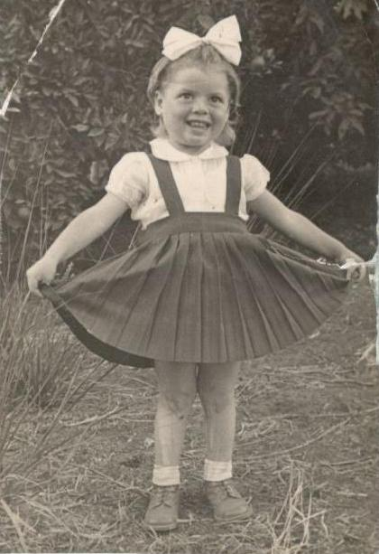
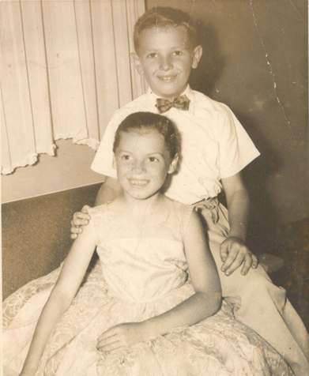
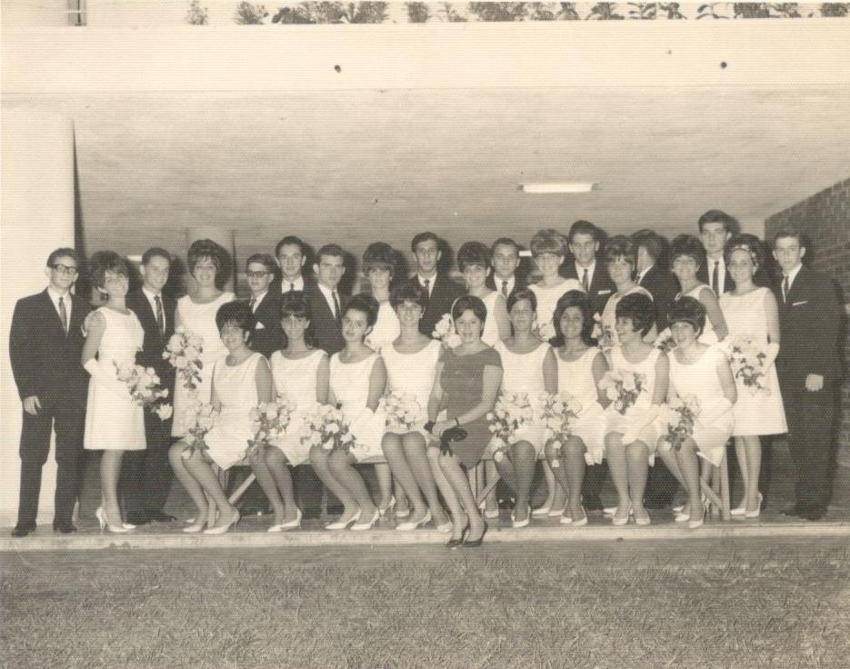
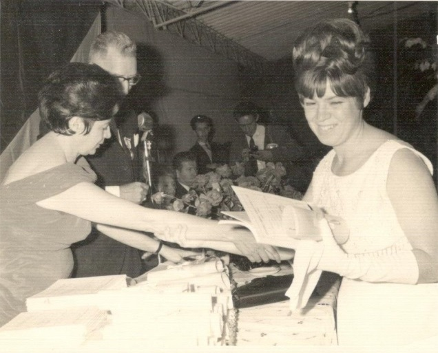
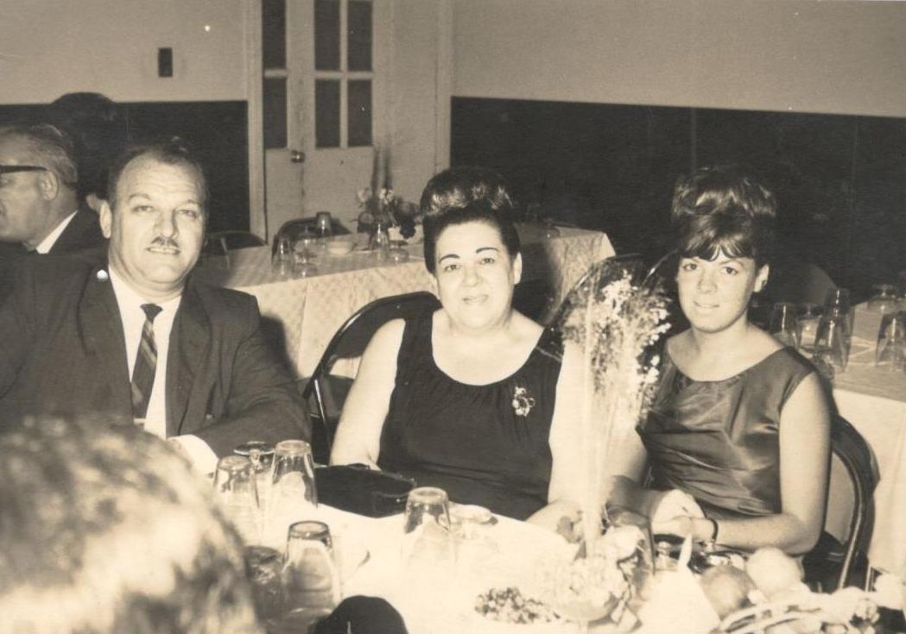
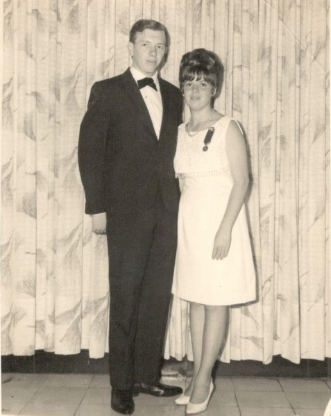
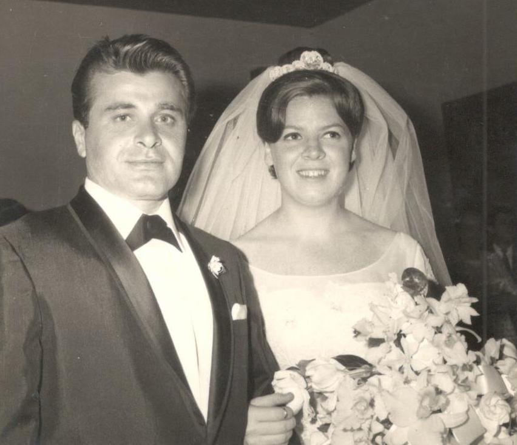
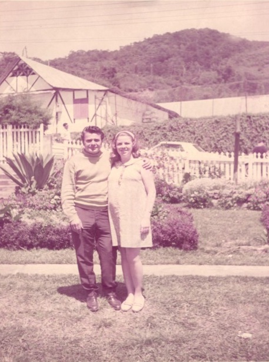
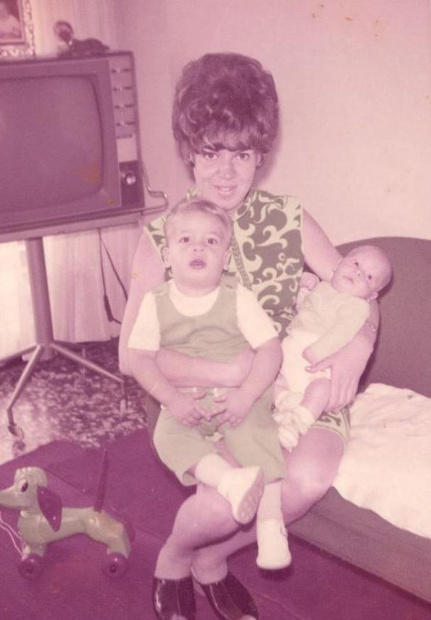
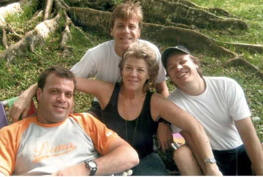

Mi Abuela, Sarina Avram
Primeros años:
Mi abuela Sarina, nació el 03 de septiembre del año 1948 en un pueblo llamado Heiden-Hein, Alemania, luego de que sus padre huyeran de Rumania y anduvieran casi un año y medio a pie llegaron finalmente a Alemania, donde nació mi abuela. A los 3 meses de haber nacidó se mudaron a Israel.
Mi abuela cuenta que la llegada a Israel fue muy dura ya que Israel estaba recién independizada y no habían muchos trabajos; a mi bisabuela Dora le tocó trabajar en un hospital de tuberculosis lavando baños. Vivieron en un cuartico los 4 (mi abuela, sus padres y su hermano mayor Sorel), no habían muchos servicios; no tenían como conseguir ayuda para cuidar a sus hijos. Ella recuerda que compartían el baño con otracasa contigua que era idéntica a la de ellos. El jardín era muy grande y cuenta que los chacales llegaban casi a la puerta de su casa a aullar y eso los asustaba mucho. Recuerda una anécdota un poco rara, en la que un vecino le dijo un día: “cierra los ojos y dame la mano que te voy a dar una sorpresa” y le terminó cortando la mano (todavía tiene la cicatriz).En aquel tiempo estaban en plena guerra de la independencia, y la situación económica de la familia no se encontraba muy estable. A la edad de los 6 años, unos tíos que vivían en Colombia los sacaron de Israel y se los llevaron a vivir a Cali, Colombia. Mi abuela recuerda que llegaron a Cali en barco por el puerto de Buena Aventura, y que uno de sus primos los fue a recibir y los llevó a su casa con todos sus tíos, que los recibieron muy bien.
Ciudad de Residencia y Estudios
La comunidad de Cali era muy bonita.Tenía 3 sinagogas y un colegio, mi abuela estudió en el colegio hebreo Jorge Isaak (el de la comunidad) un colegio mixto, donde hizo muchos amigos con los cuales sigue en contacto. Justo hace 2 años mi abuela fue a Colombia para su reencuentro de 50 años y estuvo súper contenta de rencontrarse con todos sus amigos. Su uniforme era un vestido blanco y para gala falda azul y camisa blanca. Ella me dice que los maestros judíos daban materias judaicas y los goim (no judíos) materias generales. Mi abuela termina sus estudios a los 17 años.

Religión y Cultura
Dice que siempre estuvo rodeada de un ambiente judío aunque no comían kasher porque no había donde comprarla, todos los viernes asistía a la sinagoga, cumplía todos las fiestas, etc. Comenta también que en su casa se hablaba Yiddish, rumano y español. Su infancia fue como la de cualquier otra niña de su edad en la ciudad moderna, ir al cine, de paseos, y excursiones, únicamente se les restringían las salidas con niños que no fueran de la comunidad.

Amor
En el año 1968 en Enero se realiza en Cali un campeonato de fútbol, al cual mi abuelo Herman (Nico) asiste. Bastó una semana para conectarse mutuamente, ya que a los 8 días se comprometieron, para a los seis meses contraer matrimonio. En ese mismo año mi abuela se mudó a Venezuela con el abuelo, donde formaron una familia de tres hijos el tío Niso el mayor, Jacky mi papá y el tío Jimmy, el menor.

Vida de casada
Mis abuelos querían formar una familia rápidamente y así fue. A pesar que el primer embarazo de mi abuela no llego a su término, un año más tarde nace mi tío Niso. Año y medio después nace mi papá bajo unas circunstanciasen llenas de dramatismo.
Mientras mi abuela estaba embarazada de mi papá ella sentía unos dolores fuertes en la barriga y el médico decía que era normal del embarazo, cuando mi papá nació esos dolores siguieron y se empezó a sentir muy mal. A los 2 días le empezó a dar fiebre y le empezó a dar un dolor más fuerte en el estómago. En ese mismo momento se mama (mi bisabuela Dora) sonó que ella estaba en la calle y una amiga le pregunta ¿Dora que te pasa? y me bisabuela responde; “ es que mi hija se está muriendo” y la amiga le dice” no le pasa nada solo tiene mal de ojo, haz una seña de x al aire con la mano para que se le vaya” mi bisabuela se levanta y hace la seña y mi abuela empieza a vomitar, entonces mi bisabuela llama a la casa y contesta mi bisabuelo cuando mi abuelo se entera que mi abuela estaba vomitando va corriendo a la clínica y les dice a las enfermeras que llamen al doctor pero ellas no lo querían llamar porque eras las 4:30 de la mañana, mi abuelo empezó hacer un escándalo e hizo tanto alboroto que tuvieron que llamar al doctor, cuando el doctor escucha que mi abuela estaba vomitando viene corriendo a la clínica y dice que la tienen que operar de emergencia cuando la terminan de operar él dijo que mi abuela durante el embarazo tenía una apendicitis y durante el parto se le explotó y se convirtió en una peritonitis y si no la hubieran operado mi abuela hubiera muerto.
A raíz de todo este drama mi abuela no pudo asistir al Brit de su hijo, al que llamaron Yaacov.
Ella quería mucho tener una niña, por lo que pasó muchos años tratando de tener otro hijo. Sin embargo, tuvo que esperar siete años para que D-os concediera la mitad de su deseo: por fin quedó embarazada, pero Hashem sabía que lo mejor para ella era tener otro hijo varón.
Los primeros años de casada los dedicó a cuidar a su esposo e hijos y a llevar su hogar, hasta que en el año 1986 decide que es tiempo de compartir los quehaceres del hogar con el trabajo.

Trabajo
Mi abuela trabajó en el preescolar Moral y Luces como morá hasta que la voz no le dio y la pasaron a biblioteca, trabajó por 25 años hasta que empezaron a cortar personal y la despidieron en el año 2011.
Después de trabajar tantos años, mi abuela se dedicó a disfrutar de su libertad, pasar tiempo con sus nietos a los que adora, compartir con sus amistades, pues ella es una mujer muy amigable y conversadora y ha hecho un gran número de amigos. Y por supuesto compartió mucho tiempo con mi abuelo Nico, quien en sus últimos años dependía mucho de sus cuidados.
Mi abuela quedó viuda 1 mes antes de cumplir 50 años de casados. Ella dice que todo el mundo pensaba que el matrimonio no iba a durar ya que se comprometieron a los 8 días de conocerse. Pero si duró y medio siglo y hoy en día mi abuela vive feliz con 14 nietos y dos bisnietos.
